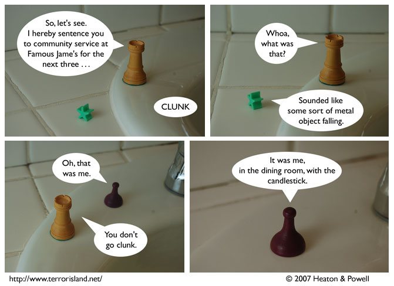

Strip #214
— Wednesday, October 24, 2007
Sid entered via the secret passage, which only counts as one square of movement.
Notes, Thoughts, &c.
Ben’s Notes
I have the ending credits song from Portal stuck in my head, and I haven’t even played the game myself, or seen the ending anywhere other than YouTube.
Lewis’s Notes
Fun Terror Island fact #7 (collect them all): Lewis makes very fine distintions regarding the notion of breaking the fourth wall, and considers it important that a strip like today’s may come close to doing so, but does not technically present any structural damage to the fact/fiction barrier.